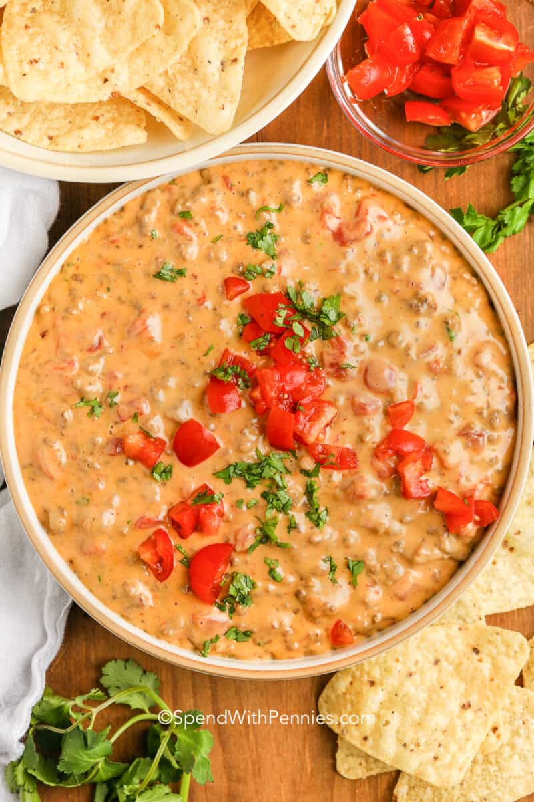

Rotel Dip

Super savory and easy rotel dip for any gameday.
Ingredients
- Ground Beef
- Rotel(crushed tomatoes)
Block of cheese
- Taco Seasoning(optional)
Steps
- Cook and strain ground beef
- Pour crushed tomatoes and chopped cheese into a crockpot aling with your taco seasoning
- Stir frequently and let heese melt
- Mix in ground beef
- Enjoy!